Download additional meteo data from database#
Data versions in database:
meteoscreening_mst = from old (now deprecated) meteo screening tool
meteoscreening_diive = from meteoscreening using diive
Auto-settings#
Data settings#
DIRCONF = r'F:\Sync\luhk_work\20 - CODING\22 - POET\configs'
# DIRCONF = r'P:\Flux\RDS_calculations\_scripts\_configs\configs' # Folder with configuration files: needed e.g. for connection to database
TIMEZONE_OFFSET_TO_UTC_HOURS = 1 # Timezone, e.g. "1" is translated to timezone "UTC+01:00" (CET, winter time)
REQUIRED_TIME_RESOLUTION = '30min' # 30MIN time resolution
Imports#
import importlib.metadata
from datetime import datetime
import warnings
warnings.filterwarnings(action='ignore', category=FutureWarning)
warnings.filterwarnings(action='ignore', category=UserWarning)
%matplotlib inline
import seaborn as sns
from pathlib import Path
import numpy as np
import pandas as pd
from dbc_influxdb import dbcInflux
from diive.core.io.files import save_parquet
from diive.core.plotting.heatmap_datetime import HeatmapDateTime
from diive.pkgs.corrections.offsetcorrection import remove_radiation_zero_offset
sns.set_theme('notebook')
dt_string = datetime.now().strftime("%Y-%m-%d %H:%M:%S")
version_diive = importlib.metadata.version("diive")
print(f"diive version: v{version_diive}")
version_dbc = importlib.metadata.version("dbc_influxdb")
print(f"dbc-influxdb version: v{version_dbc}")
dbc = dbcInflux(dirconf=DIRCONF) # Connect to database
diive version: v0.87.0
dbc-influxdb version: v0.13.1
Reading configuration files was successful.
Connection to database works.
DOWNLOAD screened data from the database#
# General download settings
download_settings = dict(
bucket=f'ch-cha_processed',
measurements=['G', 'LW', 'NETRAD', 'PPFD', 'SW'],
timezone_offset_to_utc_hours=TIMEZONE_OFFSET_TO_UTC_HOURS,
)
Download meteo version meteoscreening_diive (2022-2024)#
%%time
meteo_diive_df, data_detailed, assigned_measurements = dbc.download(
fields=[
'G_GF1_0.05_1',
'G_GF1_0.05_2',
'LW_OUT_T1_2_1',
'NETRAD_T1_2_1',
'PPFD_OUT_T1_2_2',
'SW_OUT_T1_2_1'
],
data_version='meteoscreening_diive',
start='2022-01-01 00:00:01', # Download data starting with this date (the start date itself IS included)
stop='2025-01-01 00:00:01', # Download data before this date (the stop date itself IS NOT included)
**download_settings
)
DOWNLOADING
from bucket ch-cha_processed
variables ['G_GF1_0.05_1', 'G_GF1_0.05_2', 'LW_OUT_T1_2_1', 'NETRAD_T1_2_1', 'PPFD_OUT_T1_2_2', 'SW_OUT_T1_2_1']
from measurements ['G', 'LW', 'NETRAD', 'PPFD', 'SW']
from data version ['meteoscreening_diive']
between 2022-01-01 00:00:01 and 2025-01-01 00:00:01
with timezone offset to UTC of 1
Using querystring:
from(bucket: "ch-cha_processed") |> range(start: 2022-01-01T00:00:01+01:00, stop: 2025-01-01T00:00:01+01:00) |> filter(fn: (r) => r["_measurement"] == "G" or r["_measurement"] == "LW" or r["_measurement"] == "NETRAD" or r["_measurement"] == "PPFD" or r["_measurement"] == "SW") |> filter(fn: (r) => r["data_version"] == "meteoscreening_diive") |> filter(fn: (r) => r["_field"] == "G_GF1_0.05_1" or r["_field"] == "G_GF1_0.05_2" or r["_field"] == "LW_OUT_T1_2_1" or r["_field"] == "NETRAD_T1_2_1" or r["_field"] == "PPFD_OUT_T1_2_2" or r["_field"] == "SW_OUT_T1_2_1") |> pivot(rowKey:["_time"], columnKey: ["_field"], valueColumn: "_value")
Used querystring: from(bucket: "ch-cha_processed") |> range(start: 2022-01-01T00:00:01+01:00, stop: 2025-01-01T00:00:01+01:00) |> filter(fn: (r) => r["_measurement"] == "G" or r["_measurement"] == "LW" or r["_measurement"] == "NETRAD" or r["_measurement"] == "PPFD" or r["_measurement"] == "SW") |> filter(fn: (r) => r["data_version"] == "meteoscreening_diive") |> filter(fn: (r) => r["_field"] == "G_GF1_0.05_1" or r["_field"] == "G_GF1_0.05_2" or r["_field"] == "LW_OUT_T1_2_1" or r["_field"] == "NETRAD_T1_2_1" or r["_field"] == "PPFD_OUT_T1_2_2" or r["_field"] == "SW_OUT_T1_2_1") |> pivot(rowKey:["_time"], columnKey: ["_field"], valueColumn: "_value")
querystring was constructed from:
bucketstring: from(bucket: "ch-cha_processed")
rangestring: |> range(start: 2022-01-01T00:00:01+01:00, stop: 2025-01-01T00:00:01+01:00)
measurementstring: |> filter(fn: (r) => r["_measurement"] == "G" or r["_measurement"] == "LW" or r["_measurement"] == "NETRAD" or r["_measurement"] == "PPFD" or r["_measurement"] == "SW")
dataversionstring: |> filter(fn: (r) => r["data_version"] == "meteoscreening_diive")
fieldstring: |> filter(fn: (r) => r["_field"] == "G_GF1_0.05_1" or r["_field"] == "G_GF1_0.05_2" or r["_field"] == "LW_OUT_T1_2_1" or r["_field"] == "NETRAD_T1_2_1" or r["_field"] == "PPFD_OUT_T1_2_2" or r["_field"] == "SW_OUT_T1_2_1")
pivotstring: |> pivot(rowKey:["_time"], columnKey: ["_field"], valueColumn: "_value")
Download finished.
Downloaded data for 6 variables:
<-- G_GF1_0.05_1 (52338 records) first date: 2022-01-01 00:30:00 last date: 2025-01-01 00:00:00
<-- G_GF1_0.05_2 (52565 records) first date: 2022-01-01 00:30:00 last date: 2025-01-01 00:00:00
<-- LW_OUT_T1_2_1 (52589 records) first date: 2022-01-01 00:30:00 last date: 2025-01-01 00:00:00
<-- NETRAD_T1_2_1 (52591 records) first date: 2022-01-01 00:30:00 last date: 2025-01-01 00:00:00
<-- PPFD_OUT_T1_2_2 (52590 records) first date: 2022-01-01 00:30:00 last date: 2025-01-01 00:00:00
<-- SW_OUT_T1_2_1 (52591 records) first date: 2022-01-01 00:30:00 last date: 2025-01-01 00:00:00
========================================
Fields in measurement G of bucket ch-cha_processed:
#1 ch-cha_processed G G_0.03
#2 ch-cha_processed G G_F_MDS
#3 ch-cha_processed G G_F_MDS_QC
#4 ch-cha_processed G G_GF1_0.03_1
#5 ch-cha_processed G G_GF1_0.03_2
#6 ch-cha_processed G G_GF1_0.05_1
#7 ch-cha_processed G G_GF1_0.05_2
#8 ch-cha_processed G G_GF4_0.02_1
#9 ch-cha_processed G G_GF5_0.02_1
Found 9 fields in measurement G of bucket ch-cha_processed.
========================================
========================================
Fields in measurement LW of bucket ch-cha_processed:
#1 ch-cha_processed LW LW_IN
#2 ch-cha_processed LW LW_IN_1_1_1
#3 ch-cha_processed LW LW_IN_ERA
#4 ch-cha_processed LW LW_IN_F
#5 ch-cha_processed LW LW_IN_F_MDS
#6 ch-cha_processed LW LW_IN_F_MDS_QC
#7 ch-cha_processed LW LW_IN_F_QC
#8 ch-cha_processed LW LW_IN_JSB
#9 ch-cha_processed LW LW_IN_JSB_ERA
#10 ch-cha_processed LW LW_IN_JSB_F
#11 ch-cha_processed LW LW_IN_JSB_F_QC
#12 ch-cha_processed LW LW_IN_JSB_QC
#13 ch-cha_processed LW LW_IN_T1_2_1
#14 ch-cha_processed LW LW_OUT
#15 ch-cha_processed LW LW_OUT_T1_2_1
Found 15 fields in measurement LW of bucket ch-cha_processed.
========================================
========================================
Fields in measurement NETRAD of bucket ch-cha_processed:
#1 ch-cha_processed NETRAD NETRAD
#2 ch-cha_processed NETRAD NETRAD_CORRECTED_SETTO_0_T1_2_1
#3 ch-cha_processed NETRAD NETRAD_CORRECTED_SETTO_0_T1_2_1_X_X_X
#4 ch-cha_processed NETRAD NETRAD_CORRECTED_T1_2_1
#5 ch-cha_processed NETRAD NETRAD_CORRECTED_T1_2_1_X_X_X
#6 ch-cha_processed NETRAD NETRAD_T1_2_1
Found 6 fields in measurement NETRAD of bucket ch-cha_processed.
========================================
========================================
Fields in measurement PPFD of bucket ch-cha_processed:
#1 ch-cha_processed PPFD PPFD_IN
#2 ch-cha_processed PPFD PPFD_IN_1_1_1
#3 ch-cha_processed PPFD PPFD_IN_CORRECTED_SETTO_0_T1_2_1
#4 ch-cha_processed PPFD PPFD_IN_CORRECTED_SETTO_0_T1_2_2
#5 ch-cha_processed PPFD PPFD_IN_CORRECTED_T1_2_1
#6 ch-cha_processed PPFD PPFD_IN_CORRECTED_T1_2_2
#7 ch-cha_processed PPFD PPFD_IN_T1_2_1
#8 ch-cha_processed PPFD PPFD_IN_T1_2_2
#9 ch-cha_processed PPFD PPFD_OUT_CORRECTED_SETTO_0_T1_2_2
#10 ch-cha_processed PPFD PPFD_OUT_CORRECTED_T1_2_2
#11 ch-cha_processed PPFD PPFD_OUT_T1_2_2
Found 11 fields in measurement PPFD of bucket ch-cha_processed.
========================================
========================================
Fields in measurement SW of bucket ch-cha_processed:
#1 ch-cha_processed SW NIGHT
#2 ch-cha_processed SW SW_IN
#3 ch-cha_processed SW SW_IN_1_1_1
#4 ch-cha_processed SW SW_IN_AZI_4
#5 ch-cha_processed SW SW_IN_CORRECTED_SETTO_0_T1_2_1
#6 ch-cha_processed SW SW_IN_CORRECTED_T1_2_1
#7 ch-cha_processed SW SW_IN_ELE_4
#8 ch-cha_processed SW SW_IN_ERA
#9 ch-cha_processed SW SW_IN_F
#10 ch-cha_processed SW SW_IN_F_MDS
#11 ch-cha_processed SW SW_IN_F_MDS_QC
#12 ch-cha_processed SW SW_IN_F_QC
#13 ch-cha_processed SW SW_IN_POT
#14 ch-cha_processed SW SW_IN_SOURCE
#15 ch-cha_processed SW SW_IN_T1_2_1
#16 ch-cha_processed SW SW_OUT
#17 ch-cha_processed SW SW_OUT_CORRECTED_SETTO_0_T1_2_1
#18 ch-cha_processed SW SW_OUT_CORRECTED_T1_2_1
#19 ch-cha_processed SW SW_OUT_T1_2_1
Found 19 fields in measurement SW of bucket ch-cha_processed.
========================================
CPU times: total: 8.25 s
Wall time: 20.1 s
meteo_diive_df
| G_GF1_0.05_1 | G_GF1_0.05_2 | LW_OUT_T1_2_1 | NETRAD_T1_2_1 | PPFD_OUT_T1_2_2 | SW_OUT_T1_2_1 | |
|---|---|---|---|---|---|---|
| TIMESTAMP_END | ||||||
| 2022-01-01 00:30:00 | -11.242810 | -17.538376 | 310.606803 | -30.760217 | 0.0 | 0.0 |
| 2022-01-01 01:00:00 | -11.333304 | -16.786064 | 312.806127 | -24.076991 | 0.0 | 0.0 |
| 2022-01-01 01:30:00 | -11.272530 | -16.069010 | 313.400583 | -25.581805 | 0.0 | 0.0 |
| 2022-01-01 02:00:00 | -11.107280 | -15.390925 | 311.657540 | -37.067527 | 0.0 | 0.0 |
| 2022-01-01 02:30:00 | -10.963630 | -15.161179 | 311.752803 | -30.550640 | 0.0 | 0.0 |
| ... | ... | ... | ... | ... | ... | ... |
| 2024-12-31 22:00:00 | -9.097370 | -7.880106 | 311.167160 | -5.883538 | 0.0 | 0.0 |
| 2024-12-31 22:30:00 | -9.561669 | -8.172388 | 310.079817 | -6.269816 | 0.0 | 0.0 |
| 2024-12-31 23:00:00 | -10.138718 | -8.527732 | 309.604987 | -6.934394 | 0.0 | 0.0 |
| 2024-12-31 23:30:00 | -10.649611 | -8.871628 | 308.812117 | -5.696729 | 0.0 | 0.0 |
| 2025-01-01 00:00:00 | -10.944774 | -9.138224 | 307.372117 | -8.102484 | 0.0 | 0.0 |
52592 rows × 6 columns
Download meteo version meteoscreening_mst (2005-2021)#
%%time
meteo_mst_df, data_detailed, assigned_measurements = dbc.download(
fields=[
'G_GF1_0.03_1',
'G_GF1_0.03_2',
'G_GF1_0.05_1',
'G_GF1_0.05_2',
'G_GF4_0.02_1',
'G_GF5_0.02_1',
'LW_OUT_T1_2_1',
'NETRAD_T1_2_1',
'PPFD_OUT_T1_2_2',
'SW_OUT_T1_2_1'
],
data_version='meteoscreening_mst',
start='2005-01-01 00:00:01', # Download data starting with this date (the start date itself IS included)
stop='2022-01-01 00:00:01', # Download data before this date (the stop date itself IS NOT included)
**download_settings
)
DOWNLOADING
from bucket ch-cha_processed
variables ['G_GF1_0.03_1', 'G_GF1_0.03_2', 'G_GF1_0.05_1', 'G_GF1_0.05_2', 'G_GF4_0.02_1', 'G_GF5_0.02_1', 'LW_OUT_T1_2_1', 'NETRAD_T1_2_1', 'PPFD_OUT_T1_2_2', 'SW_OUT_T1_2_1']
from measurements ['G', 'LW', 'NETRAD', 'PPFD', 'SW']
from data version ['meteoscreening_mst']
between 2005-01-01 00:00:01 and 2022-01-01 00:00:01
with timezone offset to UTC of 1
Using querystring:
from(bucket: "ch-cha_processed") |> range(start: 2005-01-01T00:00:01+01:00, stop: 2022-01-01T00:00:01+01:00) |> filter(fn: (r) => r["_measurement"] == "G" or r["_measurement"] == "LW" or r["_measurement"] == "NETRAD" or r["_measurement"] == "PPFD" or r["_measurement"] == "SW") |> filter(fn: (r) => r["data_version"] == "meteoscreening_mst") |> filter(fn: (r) => r["_field"] == "G_GF1_0.03_1" or r["_field"] == "G_GF1_0.03_2" or r["_field"] == "G_GF1_0.05_1" or r["_field"] == "G_GF1_0.05_2" or r["_field"] == "G_GF4_0.02_1" or r["_field"] == "G_GF5_0.02_1" or r["_field"] == "LW_OUT_T1_2_1" or r["_field"] == "NETRAD_T1_2_1" or r["_field"] == "PPFD_OUT_T1_2_2" or r["_field"] == "SW_OUT_T1_2_1") |> pivot(rowKey:["_time"], columnKey: ["_field"], valueColumn: "_value")
Used querystring: from(bucket: "ch-cha_processed") |> range(start: 2005-01-01T00:00:01+01:00, stop: 2022-01-01T00:00:01+01:00) |> filter(fn: (r) => r["_measurement"] == "G" or r["_measurement"] == "LW" or r["_measurement"] == "NETRAD" or r["_measurement"] == "PPFD" or r["_measurement"] == "SW") |> filter(fn: (r) => r["data_version"] == "meteoscreening_mst") |> filter(fn: (r) => r["_field"] == "G_GF1_0.03_1" or r["_field"] == "G_GF1_0.03_2" or r["_field"] == "G_GF1_0.05_1" or r["_field"] == "G_GF1_0.05_2" or r["_field"] == "G_GF4_0.02_1" or r["_field"] == "G_GF5_0.02_1" or r["_field"] == "LW_OUT_T1_2_1" or r["_field"] == "NETRAD_T1_2_1" or r["_field"] == "PPFD_OUT_T1_2_2" or r["_field"] == "SW_OUT_T1_2_1") |> pivot(rowKey:["_time"], columnKey: ["_field"], valueColumn: "_value")
querystring was constructed from:
bucketstring: from(bucket: "ch-cha_processed")
rangestring: |> range(start: 2005-01-01T00:00:01+01:00, stop: 2022-01-01T00:00:01+01:00)
measurementstring: |> filter(fn: (r) => r["_measurement"] == "G" or r["_measurement"] == "LW" or r["_measurement"] == "NETRAD" or r["_measurement"] == "PPFD" or r["_measurement"] == "SW")
dataversionstring: |> filter(fn: (r) => r["data_version"] == "meteoscreening_mst")
fieldstring: |> filter(fn: (r) => r["_field"] == "G_GF1_0.03_1" or r["_field"] == "G_GF1_0.03_2" or r["_field"] == "G_GF1_0.05_1" or r["_field"] == "G_GF1_0.05_2" or r["_field"] == "G_GF4_0.02_1" or r["_field"] == "G_GF5_0.02_1" or r["_field"] == "LW_OUT_T1_2_1" or r["_field"] == "NETRAD_T1_2_1" or r["_field"] == "PPFD_OUT_T1_2_2" or r["_field"] == "SW_OUT_T1_2_1")
pivotstring: |> pivot(rowKey:["_time"], columnKey: ["_field"], valueColumn: "_value")
Download finished.
Downloaded data for 10 variables:
<-- G_GF1_0.03_1 (269585 records) first date: 2005-09-09 10:00:00 last date: 2021-09-15 16:00:00
<-- G_GF1_0.03_2 (146469 records) first date: 2005-09-09 10:00:00 last date: 2021-11-11 15:00:00
<-- G_GF1_0.05_1 (2419 records) first date: 2021-11-11 15:00:00 last date: 2022-01-01 00:00:00
<-- G_GF1_0.05_2 (13508 records) first date: 2016-03-23 09:30:00 last date: 2022-01-01 00:00:00
<-- G_GF4_0.02_1 (47154 records) first date: 2016-01-01 00:30:00 last date: 2018-10-11 09:30:00
<-- G_GF5_0.02_1 (22060 records) first date: 2016-01-01 00:30:00 last date: 2017-05-04 08:30:00
<-- LW_OUT_T1_2_1 (282215 records) first date: 2005-09-09 10:00:00 last date: 2022-01-01 00:00:00
<-- NETRAD_T1_2_1 (275266 records) first date: 2005-09-09 10:00:00 last date: 2022-01-01 00:00:00
<-- PPFD_OUT_T1_2_2 (103059 records) first date: 2016-01-01 00:30:00 last date: 2022-01-01 00:00:00
<-- SW_OUT_T1_2_1 (283134 records) first date: 2005-09-09 10:00:00 last date: 2022-01-01 00:00:00
========================================
Fields in measurement G of bucket ch-cha_processed:
#1 ch-cha_processed G G_0.03
#2 ch-cha_processed G G_F_MDS
#3 ch-cha_processed G G_F_MDS_QC
#4 ch-cha_processed G G_GF1_0.03_1
#5 ch-cha_processed G G_GF1_0.03_2
#6 ch-cha_processed G G_GF1_0.05_1
#7 ch-cha_processed G G_GF1_0.05_2
#8 ch-cha_processed G G_GF4_0.02_1
#9 ch-cha_processed G G_GF5_0.02_1
Found 9 fields in measurement G of bucket ch-cha_processed.
========================================
========================================
Fields in measurement LW of bucket ch-cha_processed:
#1 ch-cha_processed LW LW_IN
#2 ch-cha_processed LW LW_IN_1_1_1
#3 ch-cha_processed LW LW_IN_ERA
#4 ch-cha_processed LW LW_IN_F
#5 ch-cha_processed LW LW_IN_F_MDS
#6 ch-cha_processed LW LW_IN_F_MDS_QC
#7 ch-cha_processed LW LW_IN_F_QC
#8 ch-cha_processed LW LW_IN_JSB
#9 ch-cha_processed LW LW_IN_JSB_ERA
#10 ch-cha_processed LW LW_IN_JSB_F
#11 ch-cha_processed LW LW_IN_JSB_F_QC
#12 ch-cha_processed LW LW_IN_JSB_QC
#13 ch-cha_processed LW LW_IN_T1_2_1
#14 ch-cha_processed LW LW_OUT
#15 ch-cha_processed LW LW_OUT_T1_2_1
Found 15 fields in measurement LW of bucket ch-cha_processed.
========================================
========================================
Fields in measurement NETRAD of bucket ch-cha_processed:
#1 ch-cha_processed NETRAD NETRAD
#2 ch-cha_processed NETRAD NETRAD_CORRECTED_SETTO_0_T1_2_1
#3 ch-cha_processed NETRAD NETRAD_CORRECTED_SETTO_0_T1_2_1_X_X_X
#4 ch-cha_processed NETRAD NETRAD_CORRECTED_T1_2_1
#5 ch-cha_processed NETRAD NETRAD_CORRECTED_T1_2_1_X_X_X
#6 ch-cha_processed NETRAD NETRAD_T1_2_1
Found 6 fields in measurement NETRAD of bucket ch-cha_processed.
========================================
========================================
Fields in measurement PPFD of bucket ch-cha_processed:
#1 ch-cha_processed PPFD PPFD_IN
#2 ch-cha_processed PPFD PPFD_IN_1_1_1
#3 ch-cha_processed PPFD PPFD_IN_CORRECTED_SETTO_0_T1_2_1
#4 ch-cha_processed PPFD PPFD_IN_CORRECTED_SETTO_0_T1_2_2
#5 ch-cha_processed PPFD PPFD_IN_CORRECTED_T1_2_1
#6 ch-cha_processed PPFD PPFD_IN_CORRECTED_T1_2_2
#7 ch-cha_processed PPFD PPFD_IN_T1_2_1
#8 ch-cha_processed PPFD PPFD_IN_T1_2_2
#9 ch-cha_processed PPFD PPFD_OUT_CORRECTED_SETTO_0_T1_2_2
#10 ch-cha_processed PPFD PPFD_OUT_CORRECTED_T1_2_2
#11 ch-cha_processed PPFD PPFD_OUT_T1_2_2
Found 11 fields in measurement PPFD of bucket ch-cha_processed.
========================================
========================================
Fields in measurement SW of bucket ch-cha_processed:
#1 ch-cha_processed SW NIGHT
#2 ch-cha_processed SW SW_IN
#3 ch-cha_processed SW SW_IN_1_1_1
#4 ch-cha_processed SW SW_IN_AZI_4
#5 ch-cha_processed SW SW_IN_CORRECTED_SETTO_0_T1_2_1
#6 ch-cha_processed SW SW_IN_CORRECTED_T1_2_1
#7 ch-cha_processed SW SW_IN_ELE_4
#8 ch-cha_processed SW SW_IN_ERA
#9 ch-cha_processed SW SW_IN_F
#10 ch-cha_processed SW SW_IN_F_MDS
#11 ch-cha_processed SW SW_IN_F_MDS_QC
#12 ch-cha_processed SW SW_IN_F_QC
#13 ch-cha_processed SW SW_IN_POT
#14 ch-cha_processed SW SW_IN_SOURCE
#15 ch-cha_processed SW SW_IN_T1_2_1
#16 ch-cha_processed SW SW_OUT
#17 ch-cha_processed SW SW_OUT_CORRECTED_SETTO_0_T1_2_1
#18 ch-cha_processed SW SW_OUT_CORRECTED_T1_2_1
#19 ch-cha_processed SW SW_OUT_T1_2_1
Found 19 fields in measurement SW of bucket ch-cha_processed.
========================================
CPU times: total: 38.9 s
Wall time: 1min 27s
meteo_mst_df
| G_GF1_0.03_1 | G_GF1_0.03_2 | G_GF1_0.05_1 | G_GF1_0.05_2 | G_GF4_0.02_1 | G_GF5_0.02_1 | LW_OUT_T1_2_1 | NETRAD_T1_2_1 | PPFD_OUT_T1_2_2 | SW_OUT_T1_2_1 | |
|---|---|---|---|---|---|---|---|---|---|---|
| TIMESTAMP_END | ||||||||||
| 2005-09-09 10:00:00 | 41.771999 | 41.953999 | NaN | NaN | NaN | NaN | 445.067627 | 309.428986 | NaN | 97.039001 |
| 2005-09-09 10:30:00 | 35.942001 | 35.591999 | NaN | NaN | NaN | NaN | 448.442780 | 350.565979 | NaN | 110.169998 |
| 2005-09-09 11:00:00 | 39.693001 | 37.514000 | NaN | NaN | NaN | NaN | 457.198303 | 401.156982 | NaN | 128.139999 |
| 2005-09-09 11:30:00 | 45.752998 | 40.192001 | NaN | NaN | NaN | NaN | 459.623840 | 365.227020 | NaN | 118.970001 |
| 2005-09-09 12:00:00 | 49.028999 | 41.987999 | NaN | NaN | NaN | NaN | 465.343018 | 404.110992 | NaN | 130.660004 |
| ... | ... | ... | ... | ... | ... | ... | ... | ... | ... | ... |
| 2021-12-31 22:00:00 | NaN | NaN | -9.450758 | -16.516970 | NaN | NaN | 309.381137 | -46.549667 | -2.632380 | -4.480845 |
| 2021-12-31 22:30:00 | NaN | NaN | -9.973918 | -16.958338 | NaN | NaN | 307.929707 | -54.259283 | -2.629689 | -4.238644 |
| 2021-12-31 23:00:00 | NaN | NaN | -10.410240 | -17.496144 | NaN | NaN | 308.370281 | -38.936771 | -2.697628 | -4.093687 |
| 2021-12-31 23:30:00 | NaN | NaN | -10.787319 | -17.550746 | NaN | NaN | 308.467496 | -48.241839 | -3.045312 | -3.902179 |
| 2022-01-01 00:00:00 | NaN | NaN | -11.029729 | -17.567385 | NaN | NaN | 308.733120 | -41.535265 | -3.010090 | -4.270985 |
283396 rows × 10 columns
Merge variables#
meteo_df = pd.concat([meteo_mst_df, meteo_diive_df], axis=0)
meteo_df
| G_GF1_0.03_1 | G_GF1_0.03_2 | G_GF1_0.05_1 | G_GF1_0.05_2 | G_GF4_0.02_1 | G_GF5_0.02_1 | LW_OUT_T1_2_1 | NETRAD_T1_2_1 | PPFD_OUT_T1_2_2 | SW_OUT_T1_2_1 | |
|---|---|---|---|---|---|---|---|---|---|---|
| TIMESTAMP_END | ||||||||||
| 2005-09-09 10:00:00 | 41.771999 | 41.953999 | NaN | NaN | NaN | NaN | 445.067627 | 309.428986 | NaN | 97.039001 |
| 2005-09-09 10:30:00 | 35.942001 | 35.591999 | NaN | NaN | NaN | NaN | 448.442780 | 350.565979 | NaN | 110.169998 |
| 2005-09-09 11:00:00 | 39.693001 | 37.514000 | NaN | NaN | NaN | NaN | 457.198303 | 401.156982 | NaN | 128.139999 |
| 2005-09-09 11:30:00 | 45.752998 | 40.192001 | NaN | NaN | NaN | NaN | 459.623840 | 365.227020 | NaN | 118.970001 |
| 2005-09-09 12:00:00 | 49.028999 | 41.987999 | NaN | NaN | NaN | NaN | 465.343018 | 404.110992 | NaN | 130.660004 |
| ... | ... | ... | ... | ... | ... | ... | ... | ... | ... | ... |
| 2024-12-31 22:00:00 | NaN | NaN | -9.097370 | -7.880106 | NaN | NaN | 311.167160 | -5.883538 | 0.0 | 0.000000 |
| 2024-12-31 22:30:00 | NaN | NaN | -9.561669 | -8.172388 | NaN | NaN | 310.079817 | -6.269816 | 0.0 | 0.000000 |
| 2024-12-31 23:00:00 | NaN | NaN | -10.138718 | -8.527732 | NaN | NaN | 309.604987 | -6.934394 | 0.0 | 0.000000 |
| 2024-12-31 23:30:00 | NaN | NaN | -10.649611 | -8.871628 | NaN | NaN | 308.812117 | -5.696729 | 0.0 | 0.000000 |
| 2025-01-01 00:00:00 | NaN | NaN | -10.944774 | -9.138224 | NaN | NaN | 307.372117 | -8.102484 | 0.0 | 0.000000 |
335988 rows × 10 columns
Additional corrections#
Remove radiation zero offset from PPFD_OUT#
series = meteo_df['PPFD_OUT_T1_2_2'].copy()
series_corr_settozero = remove_radiation_zero_offset(series=series, lat=47.210227, lon=8.410645, utc_offset=1, showplot=True)
meteo_df['PPFD_OUT_T1_2_2'] = np.nan
meteo_df['PPFD_OUT_T1_2_2'] = series_corr_settozero # Update variable in dataset
[remove_radiation_zero_offset] running remove_radiation_zero_offset ...
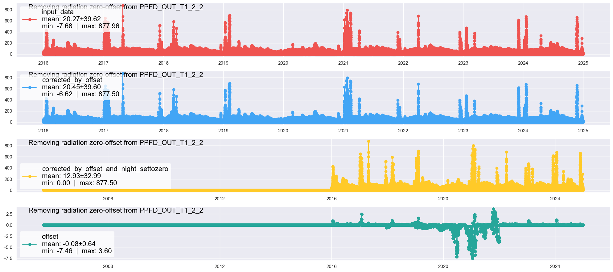
Remove radiation zero offset from SW_OUT#
series = meteo_df['SW_OUT_T1_2_1'].copy()
series_corr_settozero = remove_radiation_zero_offset(series=series, lat=47.210227, lon=8.410645, utc_offset=1, showplot=True)
meteo_df['SW_OUT_T1_2_1'] = np.nan
meteo_df['SW_OUT_T1_2_1'] = series_corr_settozero # Update variable in dataset
[remove_radiation_zero_offset] running remove_radiation_zero_offset ...
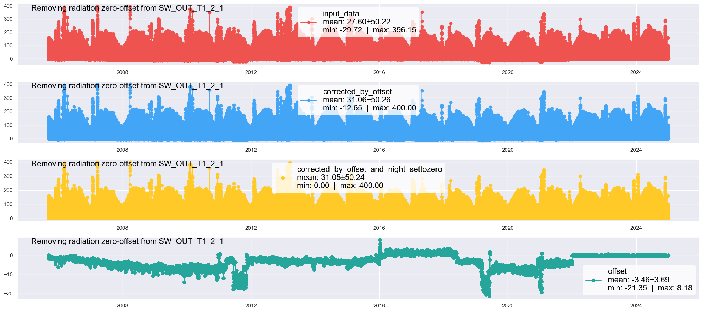
Plot#
meteo_df.plot(subplots=True, x_compat=True, title="Data from database, quality-screened using mst and diive", figsize=(20, 9));
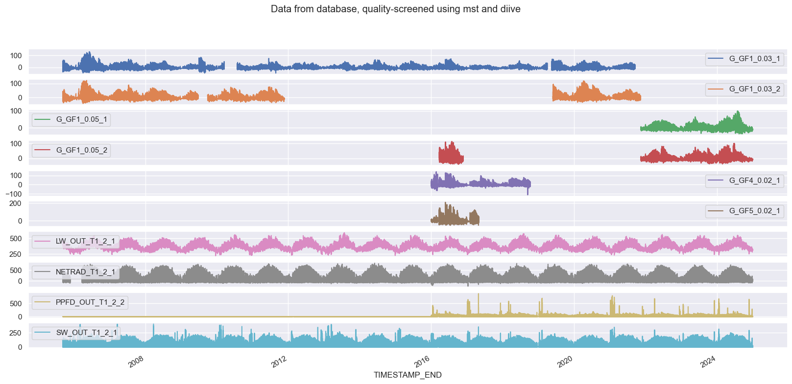
Plot: Heatmaps#
for col in meteo_df.columns:
series = meteo_df[col]
series.name = col
HeatmapDateTime(series, figsize=(6, 9)).show()
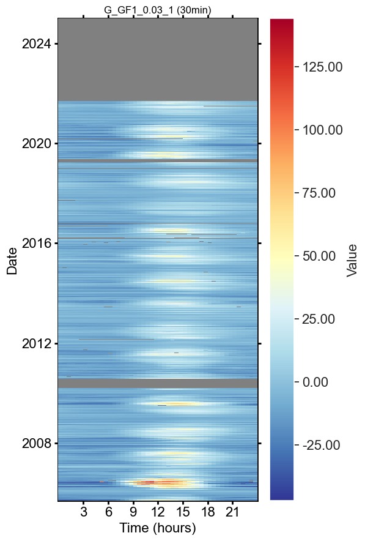
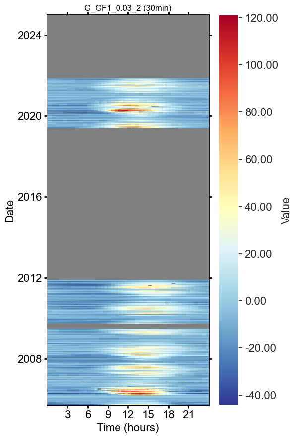
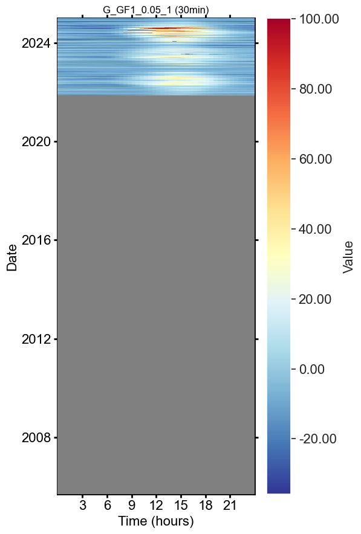
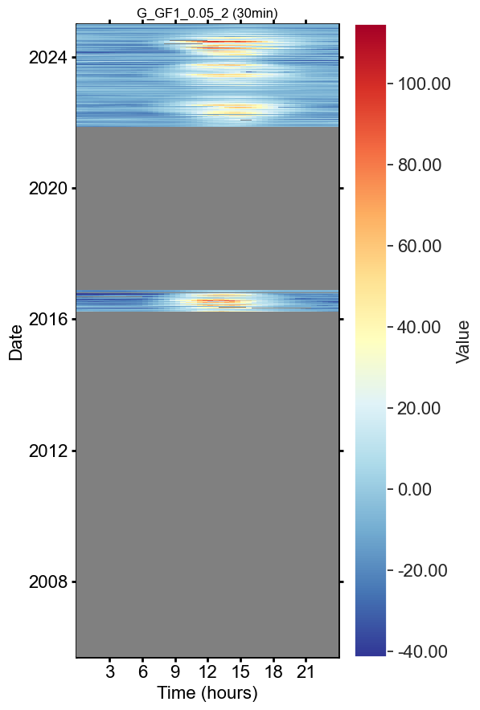
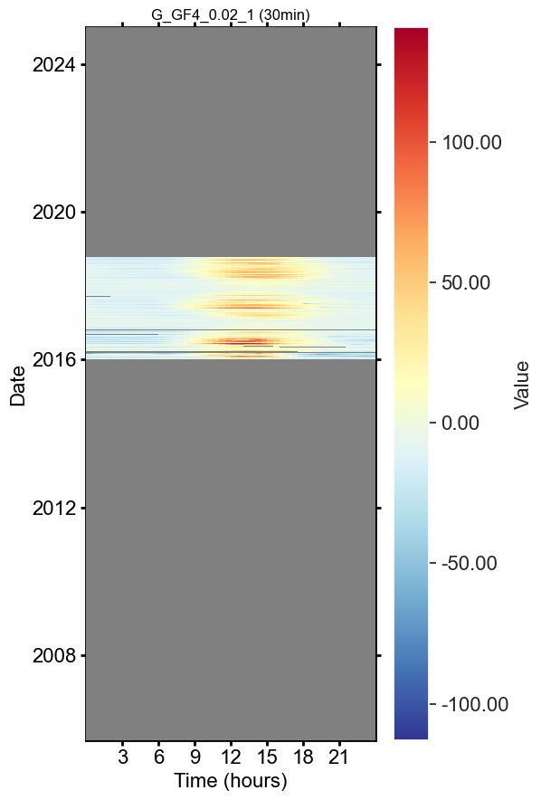
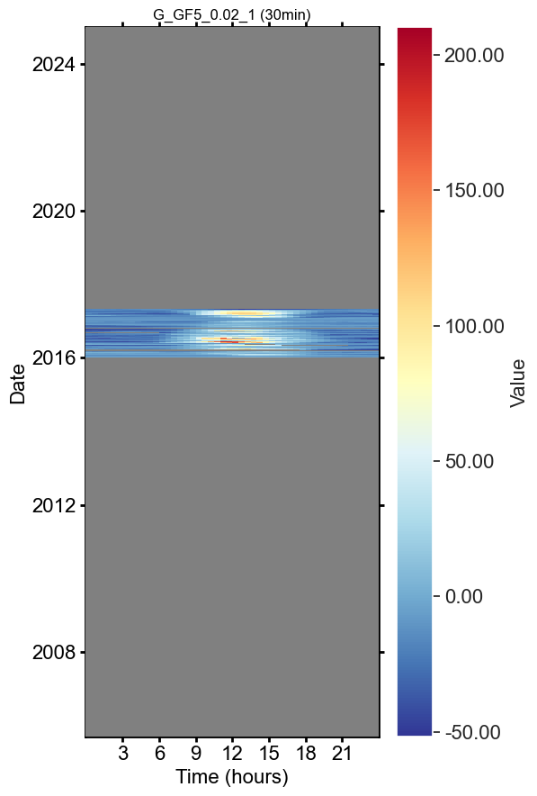
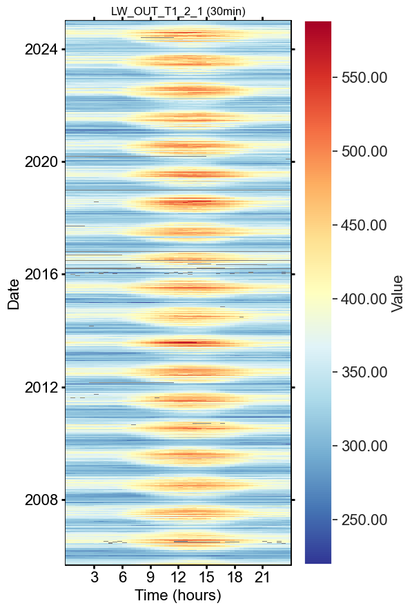
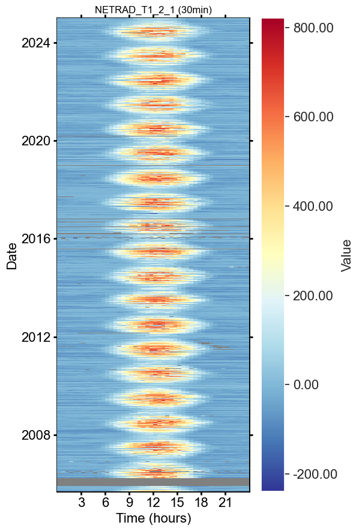
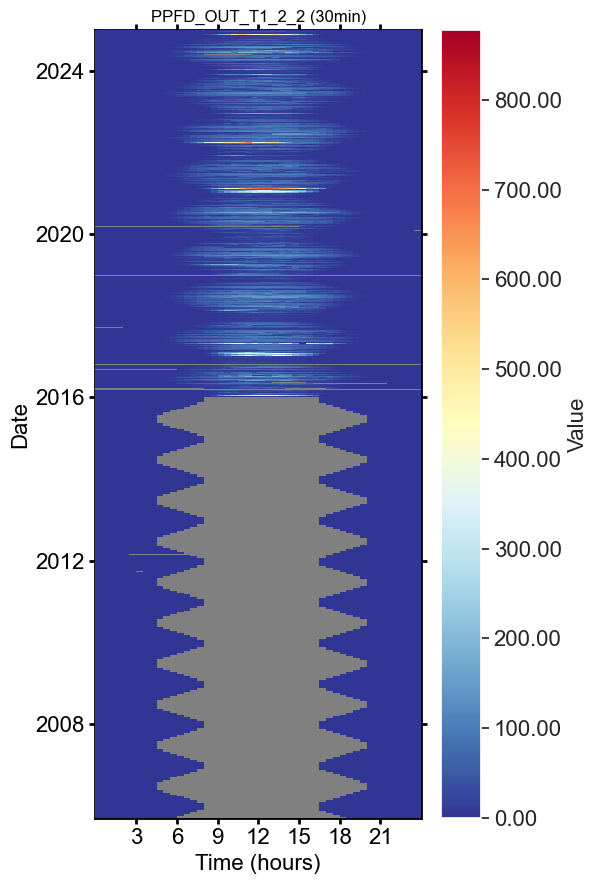
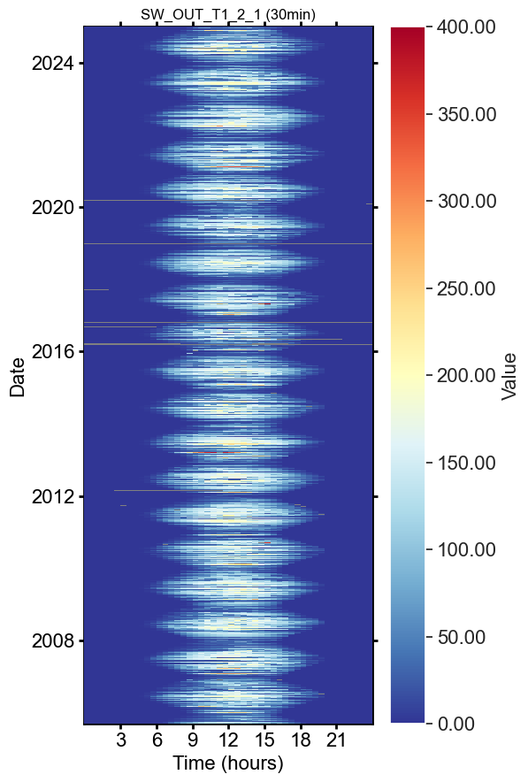
Stats#
meteo_df.describe()
| G_GF1_0.03_1 | G_GF1_0.03_2 | G_GF1_0.05_1 | G_GF1_0.05_2 | G_GF4_0.02_1 | G_GF5_0.02_1 | LW_OUT_T1_2_1 | NETRAD_T1_2_1 | PPFD_OUT_T1_2_2 | SW_OUT_T1_2_1 | |
|---|---|---|---|---|---|---|---|---|---|---|
| count | 269585.000000 | 146469.000000 | 54757.000000 | 66073.000000 | 47154.000000 | 22060.000000 | 334804.000000 | 327857.000000 | 246230.000000 | 335906.000000 |
| mean | -1.193385 | -0.577553 | -0.270094 | -0.342612 | 0.641871 | -0.283611 | 364.470743 | 71.055922 | 12.930431 | 31.045693 |
| std | 12.963156 | 17.132764 | 14.754008 | 18.143960 | 19.810565 | 30.623602 | 49.851821 | 160.981227 | 32.990131 | 50.235830 |
| min | -47.055000 | -44.280998 | -35.804811 | -41.417007 | -113.034272 | -51.693900 | 219.459778 | -239.564892 | 0.000000 | 0.000000 |
| 25% | -8.695100 | -10.853000 | -9.471208 | -11.079020 | -10.687745 | -17.098853 | 325.798793 | -24.762987 | 0.000000 | 0.000000 |
| 50% | -3.945100 | -5.171900 | -3.830321 | -4.648535 | -4.932843 | -8.082744 | 358.038179 | 1.558916 | 0.000000 | 0.000000 |
| 75% | 3.492906 | 4.951200 | 5.004128 | 5.863855 | 6.489021 | 6.695478 | 394.528016 | 102.369980 | 6.733083 | 43.763341 |
| max | 144.000000 | 121.099998 | 100.162337 | 114.592513 | 140.847467 | 210.062867 | 588.454834 | 820.841980 | 877.499474 | 400.000424 |
SAVE TO FILE#
OUTNAME = "18.1_CH-CHA_METEO_G_LWOUT_PPFDOUT_SWOUT_NETRAD_2004-2024"
OUTPATH = r""
filepath = save_parquet(filename=OUTNAME, data=meteo_df, outpath=OUTPATH)
# meteo_df.to_csv(Path(OUTPATH) / f"{OUTNAME}.csv")
Saved file 18.1_CH-CHA_METEO_G_LWOUT_PPFDOUT_SWOUT_NETRAD_2004-2024.parquet (0.179 seconds).
End of notebook.#
dt_string = datetime.now().strftime("%Y-%m-%d %H:%M:%S")
print(f"Finished. {dt_string}")
Finished. 2025-05-14 12:11:35